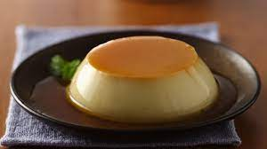
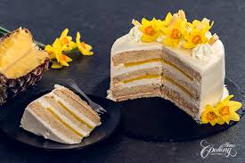

It’s not a celebration if there’s no cake, right? Gurgaon Bakers offers an exquisite range of bespoke cakes for all types of celebrations and special occasions like Birthday Cakes, Anniversary Cakes, Mother’s Day Cakes, Father’s Day Cakes, Women’s Day Cakes, Friendship Day Cakes, Valentine’s Day Cakes, Diwali Cakes, Christmas Cakes, New Year Cakes, Independence Day Cakes, Farewell Party Cakes, Baby Shower Cakes, and much more
EGGLESS FERRERO ROCHER CAKE

The title says it all don’t you think? An eggless ferrero rocher cake for each and every one of us to devour, indulge into, and enjoy! This cake has layers of a chocolate and hazelnut sponge, milk chocolate ganache, and some ferrero chocolate chunks. It’s silky smooth, decadent, and an absolute treat to make. This eggless ferrero rocher cake is perfect for any special occasion. My recipe actually makes a two layered cake but I doubled the recipe and made a tall four layered cake. You can do the same for a celebration and make a stellar cake.
Caramel Custard
Even though I love intricate desserts for how much they challenge and excite me. Simple desserts give me so much hope and excitement about the fact that so many of you will also be able to recreate a dessert that has brought me happiness. This caramel custard is a perfect example of what a simple, easy homemade dessert is like and everyone, baker or not, can prepare this without any hassle. This caramel custard is a no bake, eggless melt in your mouth kind of dessert. It is perfectly sweet from the golden caramel and has an absolutely soft and smooth mouth feel to it.
PINEAPPLE PASTRY
Tell me you have a better childhood memory than sharing, (well not really) slice of pineapple pastry with your sibling or family. Little joys of requesting dad to treat us with a dessert, and then spending the whole evening anticipating his arrival. Sweet sweet memories that I will always cherish. Cut to present day, me trying to recreate every possible dessert at home. We are making the bakery style eggless pineapple pastry that is eggless, fruity and absolutely delicious.